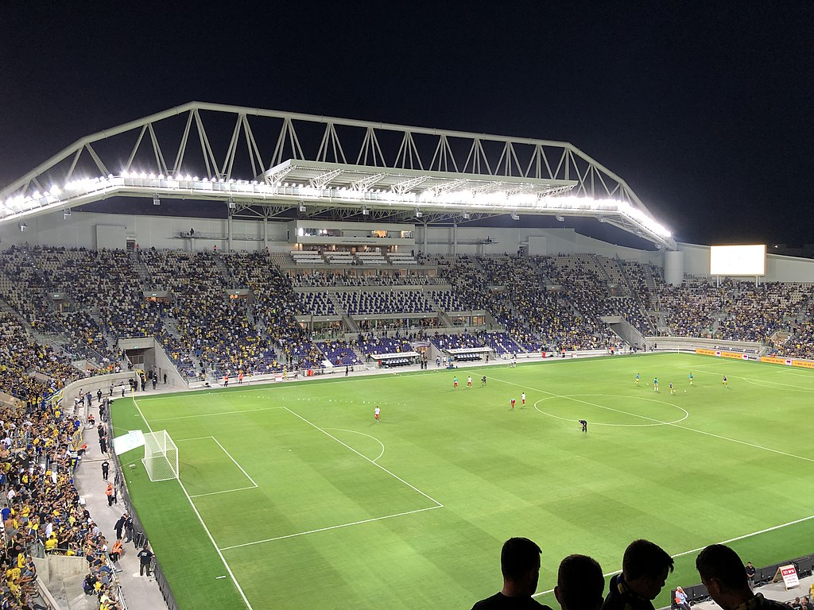
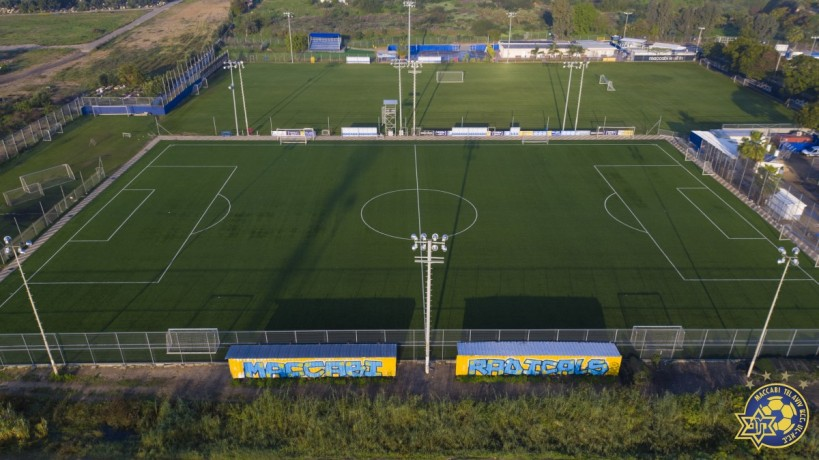

Club History By Decades
THE 50s
This decade is considered Maccabi Tel Aviv’s “Golden Age”, in which they won five championships and four State Cups. The “Golden Age” actually began with the establishment of the State of Israel, with Maccabi Tel Aviv winning the league title in the 1949/50 season. The deciding match of the season was the second Tel Aviv derby against Hapoel Tel Aviv, which Maccabi won 1-0 thanks to a goal from striker Yossef (Yossele) Merimovich that sealed Maccabi Tel Aviv’s first post-independence championship title. Merimovich was just one member of a squad of outstanding players that left Maccabi Tel Aviv unchallenged in their domination of the Israeli Premier League during the 1950s. That squad included the likes of defenders Itzik Shnior and Eli Fuchs, goalkeeper Avraham Bendori, Yosef Goldshtein, striker Tzvika Stodinski and of course the club’s legendary centre forward Yehoshua (Shaya) Glazer. Glazer, who won the top scorer title in 1952 with 27 goals, is considered Maccabi Tel Aviv’s greatest ever striker and was the club’s highest goalscorer until Avi Nimni broke his record in 2003.
Read more / Read lessThe 1951/52 season was Maccabi’s second league title after the establishment of the State, which they won by eight points ahead of Maccabi Petah Tikva, though they lost the State Cup final. That loss only inspired them to win an historic first double in the 1953/54 season, once again winning the league ahead of Maccabi Petah Tikva. That year’s Cup final provided them with the opportunity to put in one of their most devastating performances, crushing their opponents Maccabi Netanya 4-0 with a brace from Glazer and individual goals from Stodinski and midfielder Israel Halivner.
It was the following season that the great Hapoel Petach Tikva team of midfielder Nahum Stelmach and associates burst on the scene and captured the championship from Maccabi Tel Aviv after a down-to-the-wire finish. Still, Maccabi Tel Aviv weren’t prepared to surrender all the titles that season and came up trumps in a 3-1 victory over the same Hapoel Petach Tikva in the State Cup final. And Maccabi went on to beat them to the title in two more seasons, 1955/56 and 1957/58, completing their fifth national championship in the first decade of the modern state of Israel. That final season title was complemented by a double, with Maccabi beating Hapoel Haifa in the State Cup final 2-0.
The following season Maccabi Tel Aviv won their second consecutive State Cup in a final that will be remembered as one of the most famous in the entire history of the competition. Maccabi appeared to be cruising to victory with a seemingly unassailable 4-0 lead just ten minutes from time. But within five of those final ten minutes Hapoel Petach Tikva pulled back three of those goals, guaranteeing one of the most exciting finales in State Cup history. But in the end Maccabi held on to celebrate yet another State Cup triumph.
Read less
THE 60s
Following the “Golden Years” of the 1950’s, Maccabi Tel Aviv found themselves as the new decade began challenged and ultimately eclipsed by the emergent Hapoel Petach Tikva, who during the late 1950’s and early 1960’s won five consecutive league titles. The second of those championships, in 1960, came at Maccabi’s expense, with Maccabi leading the table on the last day of the season only to disappointingly lose their final match to Hapoel Haifa thereby handing the championship to Hapoel Petah Tikva. The outstanding player of Maccabi’s season had been Rafi Levi, one of the greatest strikers in the club’s history, who was the league’s leading goal scorer with 19 goals. A year later the Brazilian club Santos visited Israel, along with their legendary player Pele, for a friendly match against a side composed of the best players from both Maccabi Tel Aviv and Hapoel Petach Tikva. But even the combined forces of the two best clubs in the country were no match for the Brazilians, who won 3-1.
Read more / Read lessAfter a number of unremarkable seasons, the 1960’s saw the return to Maccabi Tel Aviv of one their greatest coaches, Jerry Beit Halevi, who had served the club as a player in the 1930’s and, with the exception of one year, managed the club for the ten years between 1947 and 1957. Under his guardianship Maccabi Tel Aviv slowly returned to form and in the 1963/64 season won the State Cup after a second replay against Hapoel Haifa, which Maccabi won 2-1. The following season Maccabi Tel Aviv repeated the feat by the exact same score, this time in a dramatic extra time victory over Bnei Yehuda that included goals by midfielders Moshe Asis and Rafi Baranes. In the 1966/67 season Maccabi added a third State Cup. This time the opponent in the final were municipal archrivals Hapoel Tel Aviv, whom Maccabi defeated by the very same 2-1 scoreline, with goals from midfielder Uri Kedmi and striker Rahamim Talbi.
While the Cup competition was held as scheduled that year, the league was interrupted by the Six Day War and was extended into 1968. Now coached by Israel Halivner, Maccabi Tel Aviv won their first and only championship of the decade after a combined 60 matchdays, leading Hapoel Petach Tikva by three points at the top of the table. But by far the most memorable event of the decade was Maccabi’s success in the Asian Club Cup in 1969, the first Israeli football club to win an international competition in the country’s history. Now managed by former striking great Yossele Merimovich, Maccabi beat South Korean side Yang Chi in extra time through a goal by striker Dror Bar Nur.
A less successful decade for Maccabi Tel Aviv perhaps, but the club still managed to win one championship and three State Cups. Among the great names of the decade were midfielder Nissim Bachar, defender Meir Nimni, defender Menachem “Miko” Bello, defender Zvika Rosen, goalkeeper Haim Levine, midfielder Moshe Asis, striker Rafi Levi and midfielder Giora Shpiegel.
Read less
THE 70s
By Maccabi Tel Aviv standards, the 1960’s had not been a particularly successful decade. With the coming of the 1970’s, all that was about to change. The very first year of the decade was a stellar indication of that change as the team, under the able leadership of the late David Schweitzer, won an historic double. The State Cup final was won with a 2-1 victory over Maccabi Netanya. The league title on the other hand was ensured only on goal difference, but one that was built in part upon one of the finest performances in the club’s history, a 5-0 thrashing of municipal archrivals Hapoel Tel Aviv in the Tel Aviv derby. On a rainy day at the end of January 1970, 20,000 spectators saw Maccabi midfielder Giora Shpiegel score a hat-trick to lead his side to an unforgettable victory. But despite that defeat, Hapoel stayed neck-and-neck with Maccabi until the very last week and it was Hapoel who found themselves in second place on goal difference when the season reached its conclusion.
Read more / Read lessThe following season was a weak one for Maccabi Tel Aviv that saw them finish tenth in the league table. But just one year later they were fully back on track, winning their second championship of the decade in the 1971/72 season. One of the stars of that season, and one of the greatest strikers in the club’s history, was Dror Bar Nur, who scored 16 of the club’s 45 goals in the league and added two more in other competitions. Just four years later Maccabi Tel Aviv found themselves for the first time in a relegation battle, with the final week of the 1975/76 season seeing no less than nine clubs battling it out to stay in the upper tier. Maccabi beat Beitar Jerusalem 2-0 with goals from strikers Rahamim Talbi and Benny Tabak, thus escaping what would have been the first relegation in the club’s history. In April of that same year, leaders of the English first division, Queens Park Rangers, arrived in Israel for a friendly to face a Maccabi Tel Aviv side bolstered by three of the Israeli Premier League’s brightest stars of the time: Maccabi Netanya strikers Mordechai (Mottele) Spiegler and Oded Machnes and Beitar Jerusalem midfielder Uri Malmilian. Maccabi won the match 2-1 with goals from Malmilian and Spiegler.
A year later and once again Maccabi Tel Aviv went from near disaster to the league summit, securing in the 1976/77 season their second double of the decade. They won the title three points ahead of Maccabi Jaffa and with 47 goals, the highest number in the league. Striker Vicki Peretz finished as the league’s leading goalscorer with 17 league goals and another five in State Cup competition. But it was Benny Tabak’s lone goal against Beitar Tel Aviv in front of 30,000 spectators at Bloomfield Stadium that earned Maccabi the State Cup and their second double in the space of seven years.
Among the great Maccabi players of the time were strikers Benny Tabak and Vicki Peretz and the late Avi Cohen, who earned the nickname “Libero” (from the Italian, a fullback who is given freedom – libero – to roam from his position to play a role in offence as well) and is thought to be one of the greatest defenders in the history of Israeli football. One of his most memorable goals was in a 2-0 derby victory over Hapoel Tel Aviv in 1978, when the defender struck an absolutely unstoppable ball from the edge of the area straight into the opposition net. Vicki Peretz and Benny Tabak are remembered as two of the greatest strikers in the history of the club, with the former scoring 67 and the latter 121 goals in the yellow and blue jersey of Maccabi Tel Aviv.
Read less
THE 80s
The 1980’s saw a period of below par achievements for Maccabi Tel Aviv FC, earning the decade the nickname the “thin years”. While adding two State Cups to the trophy cabinet, the club remained without a league title throughout the decade. The first of the two consecutive State Cup triumphs, however, was won in dramatic fashion in a final against Maccabi Haifa in the 1986/87 season. While Maccabi Tel Aviv, third in the table, finished six places above their northern namesakes, the Cup final was a tight affair that ended 3-3 after extra time and was decided in a penalty shoot-out. And it was striker Benny Tabak’s final kick that saw Maccabi Tel Aviv lift their first State Cup trophy in ten years.
Read more / Read lessThe following season Maccabi Tel Aviv, now under the stewardship of Giora Shpiegel, experienced their worst defeat in the club’s history, a 0-10 rout suffered at the hands of that same Maccabi Haifa. Yet only three weeks later the club appeared in their second consecutive intriguing State Cup final, this time against their big city archrivals Hapoel Tel Aviv. And despite the fresh memories of their lacklustre performance in Haifa, the team succeeded in returning to form thanks to a wonderful goal by midfielder Mickey Cohen and yet another from Benny Tabak that lead to a 2-1 victory and a second straight State Cup title.
Another memorable event of the 1980’s occurred at the beginning of the decade, in a match against Beitar Jerusalem held at the YMCA Stadium in Jerusalem on matchday 2 of the 1981/82 season. The match referee Avraham Klein, of international reputation, disallowed a Beitar goal but the players continued to celebrate. Maccabi defender Menahem “Miko” Belo quickly resumed play, passed on to midfielder Moti Ivanir who found himself facing the Beitar keeper Yossi Mizrachi on his own. To the great ire of the local fans he scored the goal that would ultimately lead to a 1-2 Maccabi victory. Despite the less than scintillating nature of Maccabi’s performances throughout the decade, the club were blessed with a number of outstanding players, including Moti Ivanir, midfielder Alon Natan, goalkeeper Bonni Ginzburg and striker Eli Driks, who all succeeded in leaving their mark on the club’s history. Ivanir, who made his maiden performance for Maccabi aged 16, scored 67 times playing for the club throughout the decade, with the exception of the two years he spent at Dutch side Roda JC. Alon Natan found the net 40 times before leaving the club for Bnei Yehuda at the end of the 1989/90 season. He was subsequently forced into retirement at age 23 due to injury.
Bonni Ginzburg protected the Maccabi goal from the beginning of the decade until the 1987/88 season. He earned himself a place on the national squad and two years later became the first Israeli goalkeeper to play in Europe. Eli Driks, one of the club’s all-time greatest strikers, came through the youth ranks at the beginning of the 1980’s and began a successful career at the fulcrum of the Maccabi Tel Aviv attack that lasted 20 years.
Read less
THE 90s
After the considerably less than spectacular decade of the 1980’s, a young head coach by the name of Avraham Grant took over the reins at Maccabi Tel Aviv and brought with him a whole slew of young players that together brought about one of the most successful decades in the club’s history. By the time the decade had reached its halfway point the team had already won an historic league and Cup double, along with two more championships, two State Cups and one Toto (League) Cup, to which two more would be added before the decade had drawn to a close. Within a matter of a few short years, the glow surrounding Maccabi Tel Aviv, which had dimmed somewhat in the 80’s, had returned. Once again the yellow and blue of Maccabi became the national colours of Israel’s football culture.
Read more / Read lessIt all started in the 1991/92 season, when by virtue of exceptional talent and quality attacking football under the leadership of Avraham Grant, Maccabi Tel Aviv won the league championship for the first time in thirteen years. What contributed to this talent was, among other things, the arrival at the club of the Russian national goalkeeper Alexander Ubarov, who in time became a real Maccabi Tel Aviv legend. With him arrived defender Alexander Polukarov, who also left an enduring legacy at the club and together with midfielder Uri Malmilyan and the young midfielders Avi Nimni and Itzik Zohar returned Maccabi Tel Aviv to the top of Israeli football. In the 1992/93 season, after winning the Toto (League) Cup, this talented and successful group of young players of the 90’s got their first taste of victory in the prestigious State Cup after goals by Itzik Zohar and fellow midfielder Nir Klinger decided the final against municipal archrivals Hapoel Tel Aviv. But despite finishing an excellent season with 88 points, the league title, and hence an historic “double”, remained beyond their grasp as Maccabi Haifa enjoyed a spectacular season that saw them play all 39 league matches without a loss and pip Maccabi Tel Aviv to the championship. But the following season Grant and his charges compensated for their disappointment when defender Alon Brumer’s famous goal in Beer Sheva succeeded in returning the championship to Maccabi Tel Aviv in dramatic fashion.
At the end of the 1995 season the “Mofet” Group took control of Maccabi Tel Aviv and as a result of Avraham Grant’s decision to leave the club, a new coach, Dror Kashtan, took over the reins for what would prove to be one of the best seasons in the club’s history. Their chief rivals were once again Maccabi Haifa, and the team travelled to their Kiryat Eliezer Stadium for what will always be remembered as the must-win match of that season. As the players headed for the dressing room trailing 1-0 at half time, coach Kashtan controversially decided to return his players to await their Maccabi Haifa rivals on the pitch. In the second half, goals by striker Eli Dricks and midfielders Nir Klinger and Aviv Nimni turned the match around, and that 1-3 victory not only handed Maccabi Tel Aviv the championship but also paved the way for the league and Cup double after a 4-1 thrashing of Hapoel Rishon Lezion in the State Cup final.
With Israel’s entrance into European football in 1992, Maccabi Tel Aviv turned their attention to leaving their mark on this prestigious stage as well. The 1992/93 season marked the first time Maccabi Tel Aviv competed in the qualifying rounds of the Champions League and in the first round they defeated the Maltese club Valletta, but lost to Belgian side Club Brugge in the second round. In the 1994/95 season Maccabi were knocked out in the second round of the Cup Winners Cup by German side Werder Bremen on a 2-0 aggregate. The following season Maccabi once again tried their luck in the Champions League qualifiers and almost succeeded, but a 2-1 aggregate loss to the Swiss club Grasshoppers handed the latter the keys to the group stages. In 1996 it was the powerful Turkish side Fenerbache that stood between Maccabi and the group stages and in the resultant UEFA Cup competition they encountered, and subsequently lost to, the Spanish club Tenerife. In the 1999/2000 season, Maccabi got past Lithuanian opponents Kaunas in the UEFA Cup qualifiers but then lost to French competitors Lens 4-3 on aggregate in round one.
In the 1990’s Maccabi Tel Aviv were blessed with many talented players, among them defenders Amir Shelach and the Brumer brothers Gadi and Alon, midfielder Noam Shoham and strikers Meir Melika and Nir Sivilia. Leading the team into battle was the genius of captain Nir Klinger, the free-kick artistry of Itzik Zohar and perhaps the greatest player in Maccabi Tel Aviv’s history, midfielder Aviv Nimni. In 1997 the “Mofet” Group broke up and the club was taken over by Loni Herzikovich.
Read less
THE 2000s
With a particularly attacking style of football promoted by head coach Nir Klinger, the third millennium got off to a very good start for Maccabi Tel Aviv, who won two consecutive State Cups. The first came in the 2000/01 season, one that saw Maccabi finish just fourth in the table but with the highest number of goals of any club in the Israeli Premier League, 71. Particularly memorable was Maccabi’s 7-0 demolition of Beitar Jerusalem towards the end of the season and the jaw-dropping total of 10 goals to just one reply against Hapoel Rishon Lezion in January of that same year. It was that exceptional attacking prowess that resulted in Maccabi’s receiving the State Cup from the country’s president after a 3-0 victory over Maccabi Petach Tikva in the final.
Read more / Read lessThe following season will largely be remembered for the tragic event that occurred on the 26th of January 2002 during a match against Beitar Jerusalem. Without a preceding incident, Maccabi defender Menni Levi suddenly collapsed in the middle of the pitch, picked himself up and then collapsed again. He received treatment on the pitch for quite a long time before being rushed to hospital. The game, in the meantime, was not resumed. For a number of years Levi received treatment at the rehabilitation facility Beit Levinstein in Ra’anana but unfortunately was unable to recover and was returned to his family. Subsequently the club decided to retire Levi’s number twelve jersey entirely. As the year progressed the team succeeded in recovering from this tragic incident and ended the season with their second State Cup title in as many years. In the final, Maccabi Tel Aviv won a penalty shoot-out against that season’s champion, Maccabi Haifa, after extra time saw the two sides locked in a goalless draw.
The following season Maccabi Tel Aviv won a dramatic league championship from title rivals Maccabi Haifa. On the eve of the last day of the season, head coach Nir Klinger’s lads led the league table on goal difference alone. On the day itself Maccabi Haifa led 0-5 at half time at Ashdod FC while Maccabi were still looking for their first goal against Hapoel Petach Tikva. Only in the second half did they score the three goals (to no reply) that pushed their goal difference past Maccabi Haifa and brought the championship trophy back to the Maccabi Tel Aviv trophy cabinet.
Maccabi’s most significant achievement of the decade came in the 2004/05 season when the team reached the group stages of the Champions League. In the play-off round they beat the Greek side PAOK Thessaloniki and became Israel’s second club, after Maccabi Haifa two years earlier, to reach the group stages. There they were drawn against three giants of European football, Germany’s Bayern Munich, Italy’s Juventus and Dutch side Ajax. Nonetheless Maccabi succeeded in finishing the group stage with a precious four points after beating Ajax and drawing with Juventus at home. Paradoxically they ended an indifferent league season eighth in the table but once again came away with the State Cup after winning a penalty shoot-out in a final against Maccabi Herzliya that ended 2-2 after extra time.
After this third State Cup in five seasons, Maccabi’s fortunes dipped drastically and other clubs took turns winning the league and the Cup. The 2005/06 season will be remembered in particular, earning the nickname “the Galacticos season”, for a team that brought together the likes of Israeli international Eyal Berkovic, Croatian star Giovani Rosso and Maccabi all-time great Avi Nimni. Despite the star-studded squad, Maccabi failed to translate that quality into winning form and ended the season in the bottom half of the table.
Read less
THE 2010s
In the 2010/11 season Maccabi enjoyed one moment of glory in Europe, beating a strong Greek Olympiacos side 1-0 in the home leg of the Europa League qualifiers. The victory sent Maccabi into the group stage of the competition where, despite an exciting 4-3 victory in the home leg, Maccabi failed to surpass French giants Paris Saint-Germain after a 2-0 loss in the French capital. The following season Maccabi claimed a famous victory against Greek side Panathinaikos, beating them 3-0 at Bloomfield Stadium in the qualifying stages of the Europa League. It was a year Maccabi actually did succeed in reaching the group stage of the competition but collected just two points in a group that included Turkish side Besiktas, the Ukrainians Dynamo Kyiv and the English side Stoke City.
Read more / Read lessIn the 2010/11 season Maccabi enjoyed one moment of glory in Europe, beating a strong Greek Olympiacos side 1-0 in the home leg of the Europa League qualifiers. The victory sent Maccabi into the group stage of the competition where, despite an exciting 4-3 victory in the home leg, Maccabi failed to surpass French giants Paris Saint-Germain after a 2-0 loss in the French capital. The following season Maccabi claimed a famous victory against Greek side Panathinaikos, beating them 3-0 at Bloomfield Stadium in the qualifying stages of the Europa League. It was a year Maccabi actually did succeed in reaching the group stage of the competition but collected just two points in a group that included Turkish side Besiktas, the Ukrainians Dynamo Kyiv and the English side Stoke City.
The 2012/13 season finally put an end to Maccabi Tel Aviv’s bad fortunes in the league as they won their first championship in a decade. Under the stewardship of Spanish head coach Oscar Garcia, Maccabi dominated the league unchallenged and claimed the title by thirteen points ahead of their nearest rival. They finished the season with the league’s highest goal total of 78 while shipping the fewest with just 30 goals conceded. Leading that attack was the league’s highest goalscorer, striker Eliran Atar with 22, but he was joined by midfielder Mahran Radi with eight (plus eleven assists) and young striker Moannes Dabbur with ten. Swedish striker Rade Prica and midfielder Eran Zhavi, who both arrived at the club in the January transfer window, scored eight and seven goals respectively. In defence the tone was set by Maccabi’s two centre halves, Eitan Tibi and the Spaniard Carlos Garcia, backed up by the excellence of Maccabi Tel Aviv’s Nigerian goalkeeper, Vincent Enyeama.
In the summer of 2013, Paulo Sousa was appointed Head Coach. Under Sousa’s direction the team advanced to not only the Europa League Group Stages where they faced Bordeaux, Frankfurt and APOEL Nicosia but also to the Round of 32 where they were eventually eliminated by Basel. On May 3, 2014 Maccabi won their second straight league title with a 2:1 away win over Hapoel Beer Sheva. Eran Zahavi broke the Club’s single season goal scoring record with 29 goals. Oscar Garcia returned to the Yellow & Blue prior to the 2014/15 season but on August 26th he decided to leave due to personal reasons. In his place, Pako Ayestaran was named coach. Under the Spaniard Maccabi won a historic Treble, becoming the only Israeli team to take home the League Championship, State Cup and Toto Cup in one season.
Slavisa Jokanovic joined Maccabi as Head Coach to start the 2015/16 campaign and guided the team to the Champions League Group Stages for only the second time in Club history and faced Chelsea, Porto and Dynamo Kiev. Jovanovic left Maccabi in December 2015 and Dutchman Peter Bosz was appointed in his place. During the season Eran Zahavi eclipsed the league’s season scoring record with 35 goals breaking Nissim Elmaliah’s 30 goals for Beitar Tel Aviv in 1954/55. The following campaign of 2016/17 Shota Arveladze was named Head Coach and successfully helped the Club advance to the Europa League Group Stages where they played Zenit St. Petersburg, Alkmaar and Dundalk. Over the course of the season Maccabi defeated Hapoel Tel Aviv 5:0 which tied the biggest Derby victory set in 1969/70. Arveladze left the Club midway through the campaign and was replaced by Angolan Lito Vidigal as the squad ended the season in 2nd place while falling in the Cup Final.
Jordi Cruyff was appointed Head Coach for the 2017/18 season as the Sport Director moved down to the sidelines in his 6th season with the Yellow & Blue. The Club advanced to the Europa League Group Stages for the second straight season where they faced Astana, Slavia Prague and Villarreal, defeating the La Liga outfit in Spain 1:0. Maccabi captured the Toto Cup while finishing in second place in league play.
Vladimir Ivic was appointed head coach at the start of the 2018/19 season. Under the Serbian coach, Maccabi had an impressive season and set many records. The Yellow & Blue won the league championship by a 31 point margin, recorded 89 points (club record) and won the title by the end of March, the earliest ever. The club also won the Toto Cup for the second straight season with a 2:1 win over Maccabi Haifa in the final.
The following season under Ivic the team continued their successful run in the league and won a second successive league title. During that season, Maccabi kept a clean sheet for 14 matches, conceded a total of only 10 league goals thus shattering the all time Israeli top flight records. At the end of the season, Ivic ended his role as Maccabi’s Head Coach.
Ahead of the 2020/21 season Maccabi appointed Georgios Donis of Greece as the successor of Ivic, and before the league season had began, the club added two titles to their trophy cabinet by winning the Super Cup and Toto Cup.
Read less
Bloomfield Stadium
Bloomfield Stadium is a football stadium in Tel Aviv, Israel, with a capacity of 29,400. It is the home stadium of Hapoel Tel Aviv, Maccabi Tel Aviv and Bnei Yehuda Tel Aviv. The stadium also serves the Israel national football team for some select home matches.
Bloomfield Stadium was built in Eastern Jaffa, on the land where Basa Stadium, home to Hapoel Tel Aviv since 1950, once stood. Finance for the stadium project came from the Canadian Association of Labour Israel, a Canadian charity supporting the charitable works of the Hapoel Sports Movement of the Histadrut Labour Organization in Israel, the Bloomfield family of Montreal, Canada, directly and through their family foundation called the Eldee Foundation. The project was financed in Canada and intended to honor the names of brothers Bernard M. Bloomfield and Louis M. Bloomfield, Q.C. of Montreal, Canada for their lifelong dedication to the ideals of sport in Israel. The first match at the new stadium was a 1–1 draw between Hapoel and Shimshon Tel Aviv on 13 October 1962. The stadium officially opened on 13 December 1962 on a friendly match between Hapoel and Dutch club Sportclub Enschede. In 1963, Maccabi Tel Aviv moved into Bloomfield Stadium after hosting of their matches at the Maccabiah Stadium, in 1985 Maccabi left Bloomfield Stadium for the Ramat Gan Stadium and in 2000, Maccabi returned to host at Bloomfield Stadium. In 2004, Bnei Yehuda Tel Aviv moved into Bloomfield Stadium making it the only stadium in the top three divisions of Israeli football to have three tenants. In September 2010, Bloomfield Stadium was granted Category 4 status by UEFA, which will allow it to host Champions League Group stage matches.[1] It was one of four venues at the 2013 UEFA European Under-21 Football Championship, holding three matches in Group A.[1] Between 2016 and 2019, it was closed due to renovations for expansion to 29,000 seats.[2] As a result, the three clubs had to play their home matches in Petah Tikva and Netanya up until August 2019.
Maccabi Tel Aviv Training Ground
The Maccabi Tel Aviv PenguinPickUp Training Ground is located in south Tel Aviv, near the Holon Intersection and on the outskirts of the Kiryat Shalom neighbourhood. The various Maccabi Tel Aviv teams began practising at the complex in the mid 1970’s, starting with the Youth Division teams, and joined later by the senior team. The facility consists of four pitches that serve all the Maccabi Tel Aviv teams and includes two gyms, treatment rooms and classrooms. The senior team practise at the western facility, near the locker rooms, on an area one and a half times larger than a regular football pitch, with renovated terraces that seat approximately 100 fans.
Not far from the senior team’s training ground is a synthetic pitch, one of the first of its kind in Israel, which serves as the training ground for all the teams in the Maccabi Tel Aviv Youth Division. At the northern end of the complex is the central pitch of the Youth Division, lined by two terraces with a seating capacity of over 200 and equipped for television broadcasts. The central pitch is used primarily by the Maccabi Tel Aviv Under-19 squad, but the club’s youth teams also make use of the facility. The fourth and smallest of the pitches is the eastern one, used mainly for trainings and frequently for matches of the children’s teams. The Youth Division complex has ten dressing rooms, one of which is used by visiting teams and one extra room for the referees on matchdays. During the 2011/12 season an exercise room was also built on the ground for the use of the entire Youth Division.